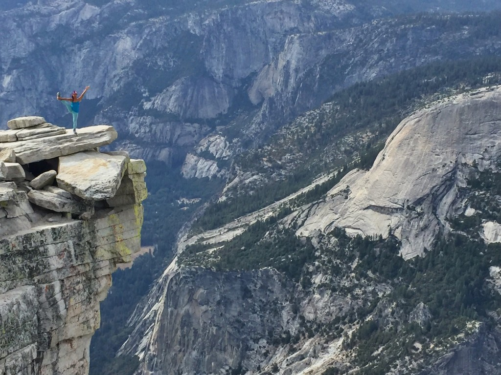

Half Dome Trail
More information
Half Dome Trail Information
Half Dome Trail is a 15.6 mile heavily trafficked out and back trail located near Mariposa, California that features a waterfall and is only recommended for very experienced adventurers. The trail offers a number of activity options and is best used from April until October. Half Dome is a serious endurance hike taking you 4800 feet above the Yosemite Valley to spectacular views of Vernal and Nevada Falls, Liberty Cap, Half Dome, and panoramic views of Yosemite Valley and the High Sierra. Preparation and safety are key and you'll have a fantastic experience. This is a hike that requires you to be in shape. Most take 10 to 12 hours to hike to Half Dome and back depending on the routes up and down. Plan to leave around sunrise (or earlier) and then have a non-negotiable turn-around time. The trail is fairly well marked but make sure you watch for all trail signs as you can miss them. The 4800 feet of elevation gain is very strenuous, starting with steep climb in the beginning to Vernal Falls (1.5m, 2.4km), followed by another steep climb to the top of Nevada Falls (3.4m, 5.5km). After the second waterfall, there is about 1 mile of fairly level hiking until you reach Little Yosemite Campground, followed by steep switchbacks through the forest. At about 7 miles (11.2km) you will reach a break in the trees, with a beautiful view of the side of Half dome with the valley below. After some steep switchbacks carved like stairs into the rock, you will reach Half Dome with only 400 feet to go. These last 400 feet are the most challenging, but also the most rewarding (although you may not realize it until you are comfortably back on the valley floor). The famous part of the hike is the ascent up the cables. The two metal cables allow hikers to climb the last 400 feet to the summit without rock climbing equipment. The cables are around a 45-55 degree grade, with wooden supports every 10 to 20 feet to rest and maintain your balance. Using gloves is highly recommended to get a better grip and avoid painful blisters (there is usually a large pile of gloves at the base that you can borrow for the climb up, but you might want to bring your own just in case). Be sure to tightly secure your water bottles and cameras for the climb up, because you will want them once at the top. The Half Dome cables usually go up the Friday before Memorial Day (conditions permitting) and come down the day after Columbus Day. Source: alltrails.com
Join the chat!
// FORUM HERE